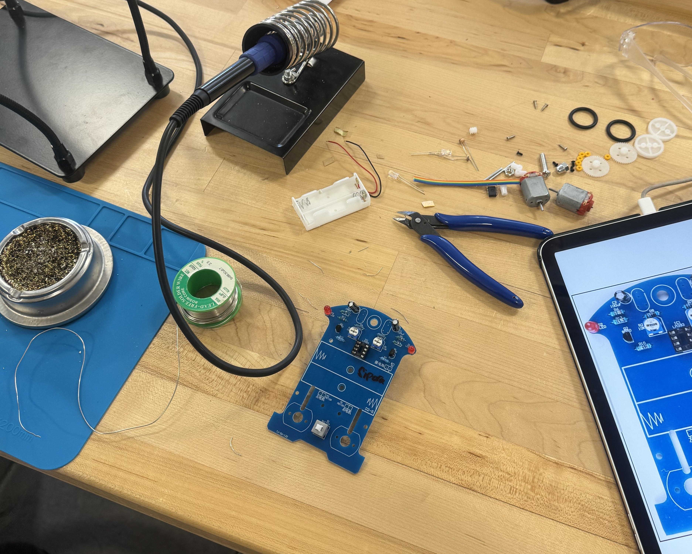
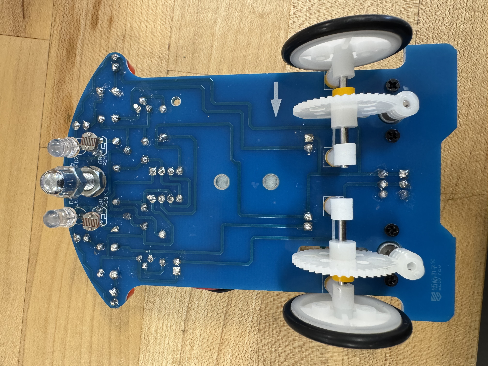
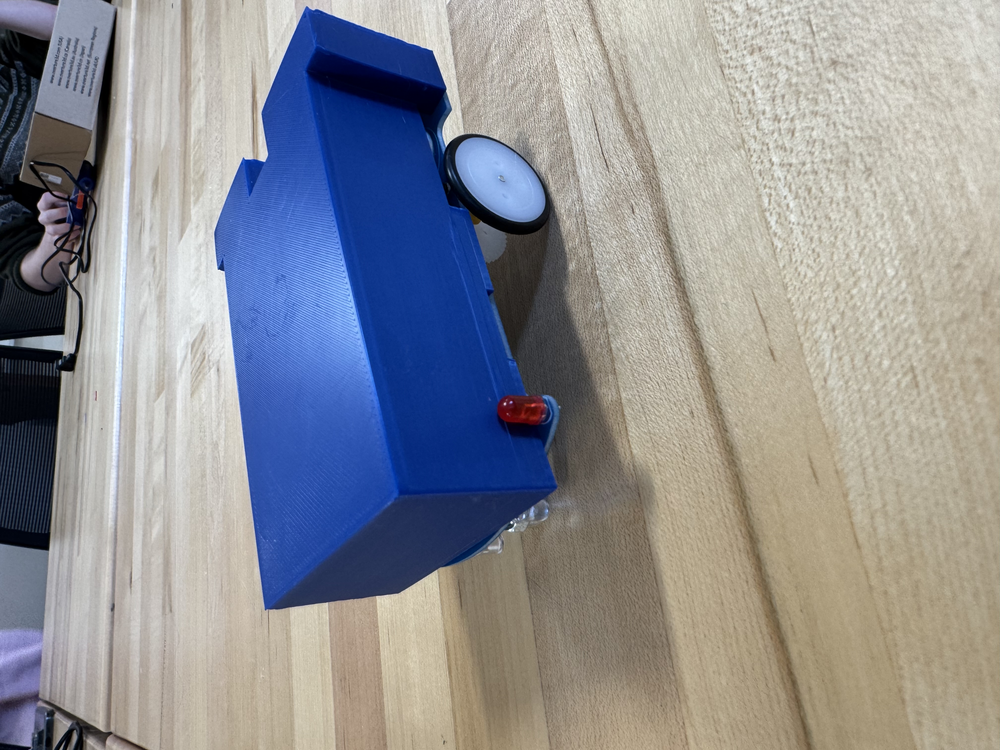
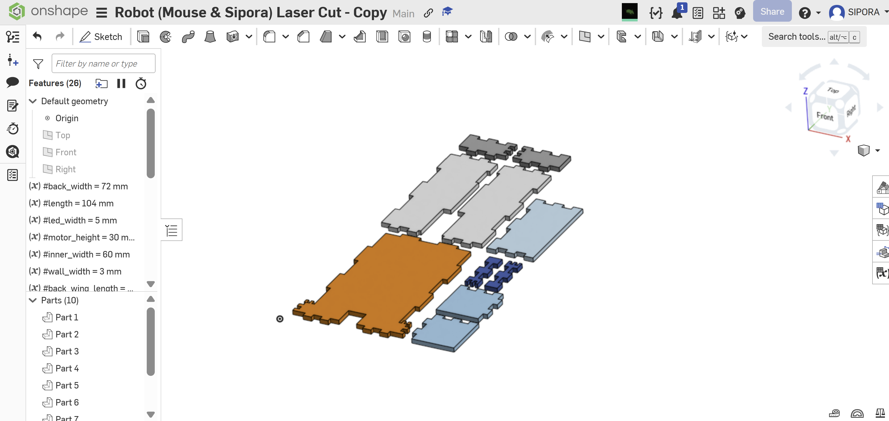
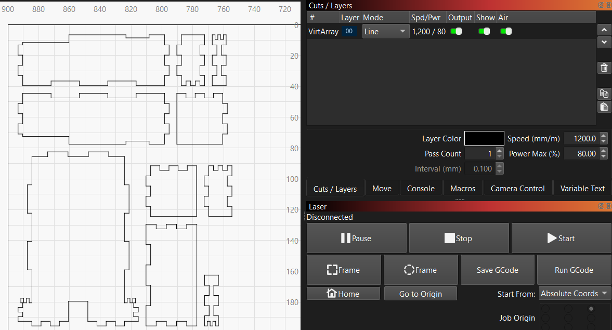
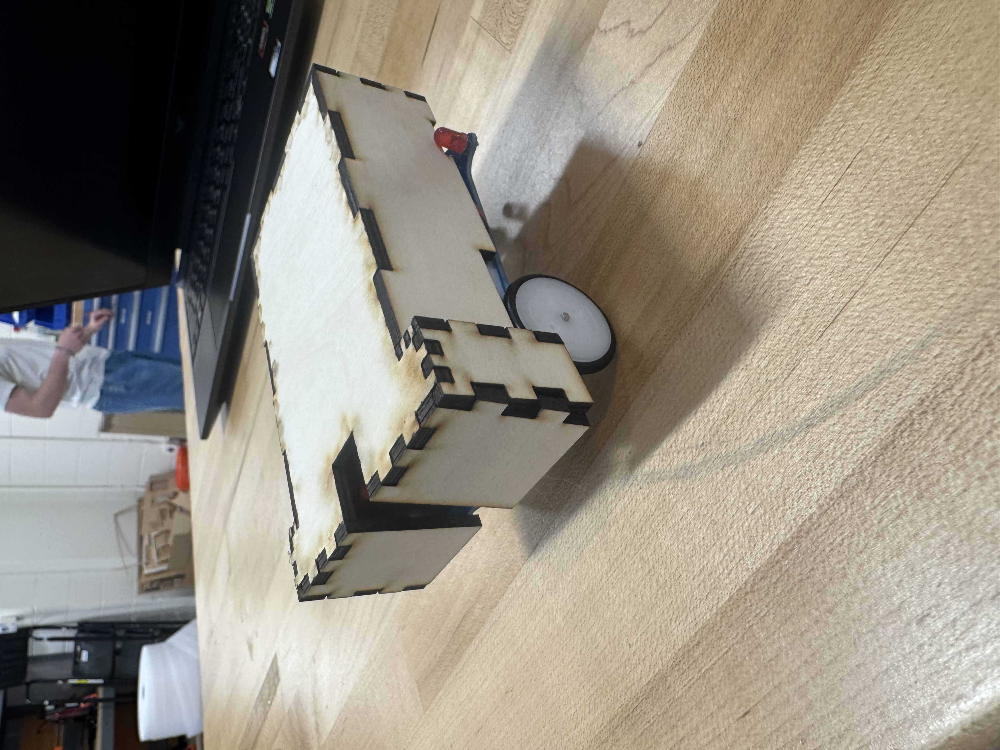
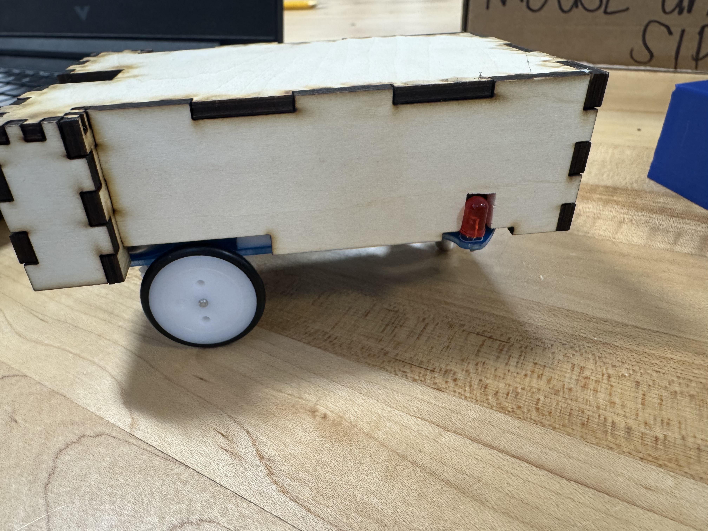
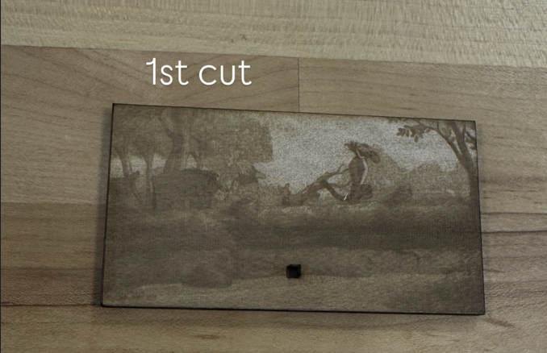
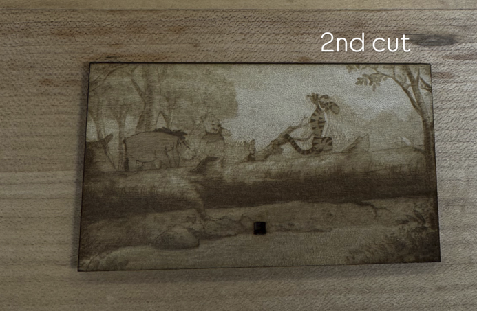

Part 1: Assembling the Robot
1.1 Manual Audit and Safety Checks
Before touching any tools, I did a full audit of the assembly manual. The most critical challenge I identified was the spacing between the solder pads for the headers. They are extremely close together, which creates a high risk for solder bridges. If a bridge occurs, it can short the board and potentially fry the microcontroller. I found the printed manual's text density a bit overwhelming, so I switched to the iPad version. This allowed me to zoom in on high-resolution diagrams to verify the polarity of components like capacitors and diodes, ensuring nothing was installed backward which would cause a circuit failure.

Digital manual review for precision (Click to enlarge)
If I were to improve the documentation, I would include a "pre-flight" checklist that highlights which components are most heat-sensitive. Knowing which parts are permanent versus which ones allow for minor adjustments would help manage the workflow more efficiently during the build.
1.2 The Soldering Process

Organized soldering station for efficient assembly
Mouse and I worked as a team and used a double check system where we inspected every joint under magnification before we moved to the next step. My main technical hurdle at the start was heat management. I realized I was holding the iron on the pads for too long, which is risky because it can cause the copper traces to lift right off the PCB and ruin the board. I learned that the key is a quick touch method where you heat the pad and the component lead at the same time for about two seconds before feeding the solder. This technique resulted in perfect tents that were shiny and strong rather than dull or rounded blobs. To keep the heat transfer consistent, we made sure the iron tip was always tinned. We frequently dipped the tip into a brass wire cleaner to remove oxidation and excess debris. This ensured the tip stayed bright and silver, which prevented the solder from becoming dull and made sure the joints cooled with a high quality finish.

Maintaining a 45-degree angle for heat transfer

Final inspected solder joints
1.3 Real-World Dimensions
To ensure the custom chassis would fit, I used digital calipers to measure the robot's physical constraints. I realized quickly that digital models are often "too perfect" and don't account for the small bumps or wire leads on a hand-soldered board. I recorded these dimensions to use as my absolute minimum bounds in OnShape:
Wheel Clearance: 26.90 mm
Battery Pack Height: 18 mm

Technical sketch with caliper verification (Click to enlarge)
Part 2: Design and 3D Print a Chassis Enclosure
2.1 The OnShape Workflow
Collaboration was key in this stage because we utilized the cloud based platform in OnShape to work within the same Part Studio. This allowed us to divide the workload effectively. I took responsibility for the base geometry and focused on the footprint and the precise placement of the mounting holes to match the PCB. Meanwhile, Mouse handled the vertical extrusions and the interlocking side walls. We spent a lot of time discussing the wall thickness settings. We had to find a balance where the walls were thick enough to stay strong and not crack under the pressure of the mounting screws, but not so thick that we would waste filament or make the print take too long. Before sending the file to the printer, we ran the model through PrusaSlicer to inspect the toolpath layer by layer. We specifically checked the internal infill density to make sure the motor mounts had enough structural support. This was important because the motors create vibration and stress when the robot is moving, so those specific areas needed to be solid.

3D CAD model showing extrusion depths
2.2 The Iteration 1 Failure
Our first print failed because we didn't account for "filament shrinkage." PLA plastic expands slightly when hot and contracts as it cools on the build plate. Because we designed the internal width to be exactly 104mm (the same as the robot), there was no "clearance" or "tolerance." It was a friction-fit that was so tight it wouldn't even slide halfway on. This was a valuable lesson in designing for real-world manufacturing tolerances.

Failed fit due to zero-clearance design
2.3 Getting the Fit Right
For the second iteration, we added a 2mm offset to the internal walls. We also kept the print speed and temperature settings identical to isolate the size as our only variable. This version slid on perfectly. While we realized we forgot to cut a hole for the power toggle, we decided to keep the "clean" look of the shell and simply lift it to turn the robot on. The video below shows the final successful run on the test track.In addition to the fit, we verified that the design maintained functionality for all five key requirements. The side cutouts provided ample wheel clearance for movement, and the bottom opening was large enough for the sensors to have an unobstructed view of the ground. We also ensured the LEDs remained visible through the chassis and that the battery pack was accessible for quick swaps.

Optimized Slicer settings

Successful enclosure assembly
Part 3: Design and Laser Cutting a Chassis Enclosure
3.1 Scaling Problems in LightBurn
Moving from a 3D model to a 2D laser-cut design was much harder than expected. We tried using a specific "Laser Joint" tool in OnShape to automatically create the interlocking tabs for our enclosure, but we ran into a huge problem because the tool simply wasn't working. Mouse and I collaborated on this for a while because neither of us could figure out why the joints weren't generating. We even followed a step-by-step tutorial, but that didn't seem to help at all. We finally decided to go off the tutorial and troubleshoot on our own. We discovered that trying to use the feature while in the Drawing tab was likely causing the glitch. Once we moved our work over to the Assembly tab in OnShape, the tool functioned perfectly and created the joints we needed.
Even after fixing the joints, exporting the DXF file into LightBurn introduced a major scaling bug. The software failed to read the metadata correctly and interpreted our millimeters as inches, making the entire design look tiny on the screen. We had to manually reset the "Import Settings" and verify the 104mm dimension against the LightBurn grid to ensure the physical part would actually fit the robot. This taught me that file formats like DXF don't always carry unit information perfectly between different engineering softwares, and you always have to double-check your scale before hitting "start" on the laser.

Verifying dimensions in LightBurn

Adjusting unit import settings
3.2 Material Thickness and Kerf Issues
The laser cut parts did not fit together at first because the acrylic sheet was slightly thicker than the standard 3.0mm we had used in our CAD constraints. When we were 3D printing, we had learned to account for how filament shrinks or expands, but we realized that laser cutting is different because the material is already solid and doesn't "give" the same way. Mouse ended up having to cut out a slot with a knife to get the led components on the side to seat properly. We eventually used hot glue to keep everything secure, which worked well to bridge the gaps caused by the manual filing. This experience highlighted the main difference between additive and subtractive manufacturing. With the 3D printer (additive), we could easily add a 2mm offset to solve fit issues. However, with the laser cutter (subtractive), we were limited by the fixed thickness of the acrylic sheet, which made the post-process filing necessary to achieve a functional fit.

Final laser cut

Laser cut alteration
3.3 Testing Stucki vs. Dither
For the engraving on the top plate, I compared two different image modes. Stucki mode uses a specific pattern to create shades, but on this specific acrylic, it looked "muddy" because the dots were too close together and melted into each other. I then tried Dither mode, which uses a more randomized dot placement. This allowed for much better contrast and fine detail without overheating the plastic. It showed me that the laser's power setting is only half the battle; the way the software tells the laser to "draw" the dots is what creates the final quality.

Stucki mode: Lacks contrast

Dither mode: High detail engraving